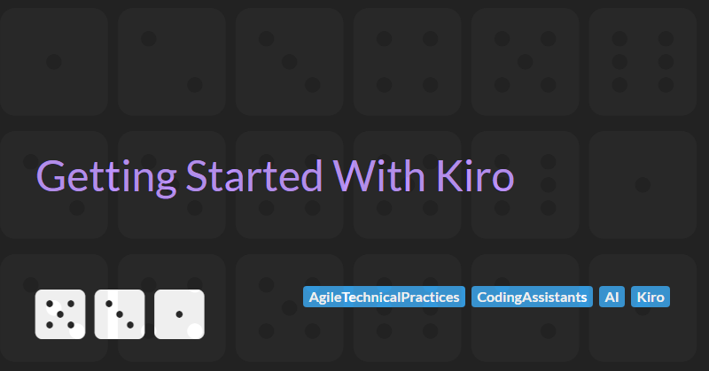

Getting Started With Kiro
Kiro is Amazon’s new spec-driven AI development tool that is currently in beta. It claims to be able to help developers move from high-level ideas to production-ready code by following a structured workflow and leveraging LLMs for the bulk of a projects code generation.
Because Kiro is in an early release state, documentation is sparse and getting started can be difficult. This tutorial is designed to fill some of those gaps and walks through creating a new greenfield project from empty directory to working skeleton.
If you are interested in trying Kiro, you can sign up for the beta waitlist to get early access.
About Spec-driven Development
Spec-Driven AI Development is an emerging approach in which AI generates code based on a set of formal specifications and rules rather than freely interpreting high-level or vague prompts. These specifications may encompass the product vision, architecture, coding standards, technology stack, and workflow, providing the AI with a structured guide for code generation.
There is currently no universally accepted definition of spec-driven development. Different vendors and practitioners place varying emphasis on the role of specifications versus code itself. Some hold extreme views, suggesting that detailed specifications could eventually replace traditional coding entirely, while moderate perspectives see specs as a way to enhance and guide code generation without eliminating the need for human-written code.
Although there is no universal agreement, most agree that a key benefit of spec-driven development is adding structure to AI-assisted coding and reducing the uncertainties of vibe coding. In vibe coding, a developer provides a high-level prompt to an LLM, allows it to generate code without manual review, and iteratively requests improvements based on execution results. This process can produce unpredictable, inconsistent, or inefficient code, which spec-driven development seeks to mitigate by grounding AI generation in formal specifications.
However, tools supporting this approach are very new and the approach itself is very experimental. From my experience, hallucinations, inconsistencies, and the need for manual correction are still common, and the method is not yet a proven improvement over traditional coding. Its success depends heavily on the quality of the specifications, prompt engineering, and ongoing developer oversight, as assumptions about the environment and tooling can still introduce friction.
How Kiro Approaches Spec-driven Development
Kiro's approach to spec-driven development is anchored in three foundational steering documents: product.md, structure.md, and tech.md. These markdown files, stored in the .kiro/steering/ directory, provide Kiro with persistent project context, ensuring that AI-generated code aligns with your team's standards and objectives.
product.md: This document articulates the project's purpose, target audience, key features, and business goals. It serves as the "why" behind the technical decisions, guiding Kiro to suggest solutions that are aligned with your product vision.structure.md: Here, you define the organisation of your codebase, including folder structures, naming conventions, and architectural patterns. This helps Kiro navigate your project efficiently, ensuring that generated code integrates seamlessly into your existing setup.tech.md: This file outlines your chosen technology stack, including frameworks, libraries, and development tools. By specifying your tech preferences, you enable Kiro to adhere to your established tools and avoid recommending divergent options.
By utilising these steering documents, Kiro claims to be able to consistently generate code that adheres to your project's specifications, reducing the need for manual corrections and enhancing team alignment. This structured approach transforms Kiro from a reactive code generator into an intelligent agent that understands and executes your development intentions.
In this article, we will focus on these three structured specification documents as we set up a greenfield project, but Kiro also supports several other key features, including:
- Agent Hooks: Automated triggers that perform tasks such as generating unit tests, updating documentation, or running security scans in response to code changes.
- Multimodal Input Support: The ability to incorporate images and diagrams into the development process, enhancing context understanding.
- Model Context Protocol (MCP) Integration: Seamless connection to external tools like documentation, design systems, and APIs, enabling agents to work with live context
- Transparent Code Diffs: Visual representation of code changes, allowing developers to review and approve modifications before implementation.
Kiro Workflow for Greenfield Projects
To properly evaluate the capabilities and limitations of Kiro, we need a non-trivial project with real complexity. After brainstorming ideas with ChatGPT, I decided to build a multi-tenant task and project management platform. The goal was to create something functionally similar to a lightweight version of Asana or Trello.
I’ve called this platform Yello, and it is designed to:
- Be feature-rich enough to stress-test specification-driven workflows
- Support incremental feature additions, allowing us to see how well Kiro adapts to evolving specs
- Span multiple domains (API, persistence, UI, integrations, etc.)
- Include edge cases that test validation, error handling, and automated test generation
From my experience bootstrapping Yello, I’ve developed a workflow that I’ve found effective for setting up a greenfield project:
- Create steering files
- Refine the product spec
- Define structure and tech specs
- Generate a skeleton frontend and backend
You can explore how this workflow unfolds by reviewing the commit history of the Yello project.
Step 1. Bootstrap with steering files
When you open a blank folder in Kiro, the “Generate Steering Docs” button will appear in the Agent Steering section. This option is visible because no steering files exist yet.
Clicking Generate creates a set of basic boilerplate steering files. These files provide the initial structure Kiro uses to understand your project’s intent, architecture, and technical direction.
Kiro may also make assumptions about the project type based on the name of the parent folder. For example:
- If you generate steering files in a folder named
go-cache, Kiro may infer that the project is written in Go and intended to be a high-performance data storage and retrieval system. - If the folder name is more generic, such as
projectorapp, then the initial steering files will also be generic and tech-agnostic.
To be honest it doesn't really matter at this stage what the contents of the steering files contains as we will be refining in the following steps.
This bootstrapping process ensures you always start with a structured foundation, even in the absence of detailed specifications. From there, you can refine the generated steering files (product.md, structure.md, and tech.md) to align them with your project vision and requirements.
Step 2. Refine the product spec
Now that the bootstrap process has generated the boilerplate steering files, the next step is to refine them, starting with product.md.
The product.md file captures the high-level vision of your project: what it is, who it is for, and why it exists. A well-written product.md gives Kiro important context so that all future code generation aligns with your intended goals.
Like all steering files, there are several ways to refine product.md:
- Manual editing. You can open the file directly and write or revise the content yourself.
- AI-assisted refinement. You can ask the AI assistant to help refine the content using a prompt.
- Hybrid approach. You can manually make edits to the file and then click Refine to have the AI build upon your changes, turning a rough outline into something more detailed and polished.
This hybrid approach is the one I prefer. It allows me to set the direction in my own words while letting the AI enrich and structure the details.
For the Yello project, to kick things off, I created a basic product overview using ChatGPT, which I then fed into product.md as the starting point for refinement.
# Product Overview
Yello is a multi-tenant project and task management platform that helps teams
organize work, collaborate, and track progress across projects within shared
workspaces.
## High-Level requiremetns
- Support multi-tenant workspaces with secure data isolation.
- Provide user authentication and role-based access control (admin, member, guest).
- Allow project creation and management within a workspace.
- Enable task management (creation, assignment, due dates, statuses).
- Provide a basic activity feed for task and project updates.
- Ensure scalability to support multiple organizations and users concurrently.
- Deliver fast, reliable performance with secure data storage.Then after clicking Refine I ended up with a highly detailed product that includes:
- Core product requirements including
- Strong requirements around multi-tenancy and security
- Clearly defined user management and access control rules
- A diagram outlining the relationships between core entities
- Conventions for task management
- Requirements for the activity feed
- Development guidelines including:
- API design
- Data validation
- Performance considerations
- Security requirements
You can view the full product.md in the Yello GitHub repo.
Step 3. Define the structure and tech specs
The difference between tech.md and structure.md is not clear cut and there is some overlap. The Kiro documentation defines the purpose of these steering files as:
tech.md- Documents your chosen frameworks, libraries, development tools, and technical constraints. When Kiro suggests implementations, it will prefer your established stack over alternatives.structure.md- Outlines file organisation, naming conventions, import patterns, and architectural decisions. This ensures generated code fits seamlessly into your existing codebase.
However in order to organise files correctly and have idiomatic naming and patterns, the structure.md file must know about the underlying tech being used in the application which is defined in the tech.md.
And in order understand the development tooling, the tech.md file needs to know about the file structure (especially if using a mono repo pattern) and this is defined in structure.md.
As it turns out, this circular dependency doesn't matter too much. We can simply generate one and then update the other to reflect the contents of the first.
For example, when building the Yello application I started with the structure.md file and used this prompt to generate it:
Update #structure.md to include best practices for a bun / typescript application using the bun server for backend APIs and a separate bun / vite / react / typescript client front end
And then updated the tech.md file using the prompt:
Update #tech.md to reference tooling identified in #structure.md
See the full versions of Yello/.kiro/steering/structure.md and Yello/.kiro/steering/tech.md for more details.
Step 4. Generate an Initial Skeleton
With all the steering files in place, we can now generate the skeleton application code. This is as simple as running the prompt:
Generate basic skeleton app with just a simple home page and "hello world" REST API
Once this completes the initial bootstrapping process is done and you can move on to using specs (which I will cover in a future post).
Problems Integrating Database Support
After getting the basic skeleton in place, I needed to add a database to the Yello app to store uses, workspaces, tasks etc. Postgres seemed like a reasonable choice. I also wanted to make development frictionless so orchestrating this infrastructure with Podman also seemed sensible.
I ran this prompt to see how much of this set up could be done by the AI:
Add a backend postgres database and use podman when running locally to launch a local database
This did a lot. It did what I expected:
- Created some scripts to start, stop, and reset a Postgres container using Podman.
But it also did a bunch of things that I didn't expect:
- Created a initial database schema based on the entities outlined in the
product.md. This was nice, but I'd probably want tighter control of the schema in a real project. - Added the drizzle-orm package to the backend server to manage database queries. This is a reasonable choice I guess but I may have wanted to pick something else.
- Updated the API health check to verify that the database was running. This was nice.
- Created a bunch of API endpoints to get all the data from the database. These seem wrong given as they break the security requirements of the project (e.g. I shouldn't be able query all projects, only those I have access to).
Despite doing all these nice things, the thing I wanted it to do most (create the scripts) was the most disappointing since I was running the prompt on my Windows development laptop and yet the LLM chose to generate bash scripts which I could not run.
I tried to fix this using the prompt:
Update database scripts to work on Windows development machines as well as Mac. Ensure database is running when bun run dev command is executed
This converted the bash scripts to JavaScript files that could by run via bun run commands. However, Kiro suggested a hallucinated package (concurrently.cmd) and the new scripts needed to be manually fixed before they would work correctly.
Conclusion
Working with Kiro has been an eye-opening look at the potential of spec-driven AI development. The structured approach, anchored in steering documents, brings more consistency and alignment than ad-hoc prompt engineering and can accelerate the early stages of a project. At the same time, Kiro is still very much in its beta phase. It makes assumptions, introduces unexpected dependencies, and sometimes produces code that requires manual correction.
In helping me build my Yello sample project, Kiro has been useful for scaffolding and getting an initial framework in place, but its attempts at database setup and tooling demonstrated how unreliable and inconsistent the outputs can be.
For now, I see spec-driven AI tools like Kiro as interesting experiments for accelerating engineers and a definite advance over vibe coding, but they remain far from being capable of replacing the critical thinking, decision-making, and problem-solving that real engineering requires.